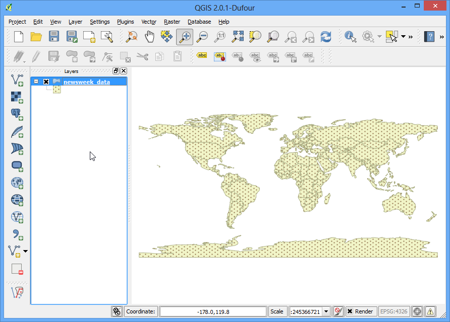

Principali tematizzazioni per dati vettoriali
[ Download PDF A4 Letter ]
Per creare una mappa è necessario tematizzare i dati GIS cioè presentarli in una forma che sia significativa sul piano visivo. Sono disponibili un gran numero di opzioni in QGIS per ottenere diverse varietà di simbologie che hanno lo scopo di evidenziare il significato dei dati. In questa esercitazione esamineremo alcuni elementi di base della tematizzazione.
Descrizione del compito
Tematizzeremo un layer per descrivere l’aspettativa di vita in diversi paesi del mondo.
Altri aspetti che avremo modo di apprendere nel corso dell’esercizio
Procedimento
Aprite QGIS e andate su .

Cercate il file appena scaricato che si chiama lifeexpectancy.zip e fate click su Apri. Quando il sistema ve lo chiederà, selezionate WGS84 EPSG:4326 come Sistema di Riferimento (SR).

Lo shapefile contenuto all’interno dello zip file è stato caricato e potete valutare lo stile che gli viene applicato automaticamente come tematizzazione di default.

Fate click con il tasto destro del mouse sul layer e selezionate Apri Tabella degli Attributi.

Esaminiamo i diversi attributi. Per tematizzare un layer, noi dobbiamo utilizzare un attributo, identificato, in genere, da una colonna, che sia rappresentativo della mappa che intendiamo creare. Dal momento che in questa occasione intendiamo rappresentare l’aspettativa di vita, cioè la vita media di una persona che vive in un dato paese, il campo LIFEXPCT sarà l’attributo che andremo a tematizzare.

Chiudete la tabella degli attributi. Fate click con il tasto destro sul layer ma questa volta scegliete Proprietà.

Le diverse opzioni di stile si trovano nella scheda Stile della finestra di dialogo Proprietà. Facendo click sul menu a discesa nella scheda Stile, compariranno cinque opzioni possibili - Simbolo Singolo - Categorizzato, - Graduato - Tramite Regole - Spostamento Punto. - In questa esercitazione ci occuperemo delle prime tre opzioni.

Selezionate Simbolo Singolo. Questa opzione vi permette di scegliere un singolo stile che sarà applicato a tutte le geometrie del layer. Dal momento che si tratta di un vettore di elementi poligonali, avete due scelte di base: potete riempire il poligono, oppure potete usare soltanto le linee del bordo. Scegliete, per fare un esempio, il pattern di riempimento che si chiama dotted e fate click su OK.

Ora potete vedere il nuovo stile di riempimento che avete scelto applicato al layer.

E’ piuttosto evidente che lo stile Simbolo Singolo non è molto efficace per comunicare un dato come quello che intendiamo rappresentare, cioè quello dell’aspettativa di vita. Vediamo allora una seconda opzione di tematizzazione. Click di nuovo con il tasto destro sul layer e selezionate Proprietà.Questa volta scegliete dalla scheda Stile l’opzione Categorizzato. Categorizzato significa che le geometrie saranno presentate in diverse gradazioni di colore sulla base dei valori unici degli elementi del loro campo. Scegliete LIFEXPCT come Colonna e quindi fate click sul tasto in basso Classifica. Fate click su OK

Potrete vedere i differenti paesi apparire in diverse gradazioni del blue. I colori più chiari indicano una bassa aspettativa di vita, mentre quelli più scuri indicano una aspettativa di vita più alta. Questa rappresentazione dei dati è molto utile e chiara per comprendere la differenza tra l’aspettativa di vita nei paesi sviluppati e quella nei paesi in via di sviluppo. E questo potrebbe anche essere il tipo di tematizzazione che intendevamo ottenere.

Vediamo adesso di esplorare la simbologia Graduato nella finestra di dialogo Stile. La tipologia graduato ci permette di suddividere i dati di una data colonna in un certo numero di classi e quindi scegliere uno stile differente per ciascuna classe. Per esempio, noi possiamo scegliere di classificare la nostra aspettativa di vita in tre classi,``BASSA``, MEDIA e ALTA. Scegliete LIFEXPCT come Colonna e scegliete 3 come numero delle classi. Vediamo poi che ci sono differenti opzioni riguardo il Modo che vogliamo utilizzare per la classificazione. Vediamo qual è la logica che presiede ciascuno di questi “modi”. Ci sono 5 modi che possono essere avviati. Intervallo Uguale, Quantile, Natural Breaks (Jenks), Deviazione Standard e Pretty Breaks. . Questi diversi modi utilizzano algoritmi statistici diversi per suddividere i dati in classi distinte.
Intervallo uguale: Come suggerisce il nome, questo metodo creerà classi che sono della stessa misura. Se i nostri dati variano da 0 a 100 e vogliamo 10 classi, questo metodo creerà una classe da 0 a 10, una da 10 a 20, una terza da 20 a 30 e così via, mantenendo per ciascuna classe la stessa misura di 10 unità.
Quantile: questo metodo definisce delle classi di intervallo tali per cui il numero dei valori in ciascuna di esse sia lo stesso. Se ci sono 100 valori e noi vogliamo suddividerli in 4 classi il metodo del quantile stabilirà intervalli di valore pari a 25 ciascuna.
Natural breaks (Jenks): Questo algoritmo si propone di individuare dei raggruppamenti naturali dei dati per creare le classi di intervallo. Le classi risultanti saranno tali che ci sarà una varianza massima tra le singole classi e una minima varianza all’interno di ciascuna classe.
Deviazione Standard - Questo metodo calcolerà la media dei dati e creerà le classi sulla base della deviazione standard dalla media.
Pretty Breaks: Questo metodo è basato su un pacchetto statistico chiamato R’s pretty algorithm. E’ piuttosto complesso ma l’aggettivo inglese pretty all’interno del nome indica che l’algoritmo crea delle classi confine intorno ai numeri.
Per semplificare, noi useremo il metodo del Quantile. Facendo click sul tasto in basso Classifica vedrete 3 classi che mostrano ciascuna i propri intervalli di valore. Fate click su OK.
Nota
Un attributo, per essere usato nel modo Graduato, deve essere un dato di tipo numerico. I valori Integer e Real vanno bene, ma se l’attributo è di tipo Stringa, non può essere usato con questa opzione.

Vedrete una mappa che mostra i paesi in uno dei 3 colori che abbiamo definito e che indica l’aspettativa di vita media in ciascun paese.

Adesso tornate sulla finestra di dialogo Stile cliccate sul layer e scegliete Proprietà. Ci sono altre opzioni di stile che possono essere utilizzate. Potreste, ad esempio, fare click su ciascuno dei simboli per ciascuna delle classi e scegliere uno stile differente per ogni classe. Per esempio, possiamo scegliere Rosso, Giallo e Verde come colori di riempimento per indicare rispettivamente “Bassa”, “Media” e “Alta” aspettativa di vita.

Nella finestra di dialogo Selettore Simbolo click sul selettore Colore.

Click su un colore nella finestra di dialogo Seleziona Colore.

Tornate nella finestra Proprietà del Vettore. Potete cliccare due volte sulla colonna Etichetta accanto a ciascun valore e scrivere al suo interno il testo che preferite. Analogamente, potete modificare a vostro piacimento il valore di ciascun intervallo cliccando due volte sulla colonna Valore. Quando siete soddisfatti fate click su OK.

Questa tematizzazione ci ha condotto a una mappa decisamente più eloquente di quelle realizzate nei due tentativi precedenti. I nomi delle classi sono chiaramente indicati e i colori rappresentano bene la nostra interpretazione dei valori dell’aspettativa di vita sul pianeta.